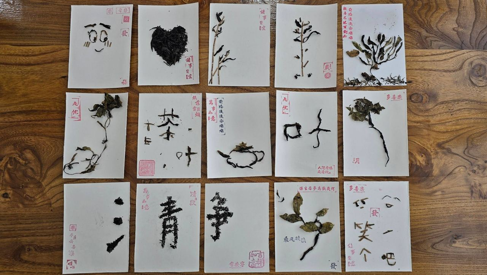
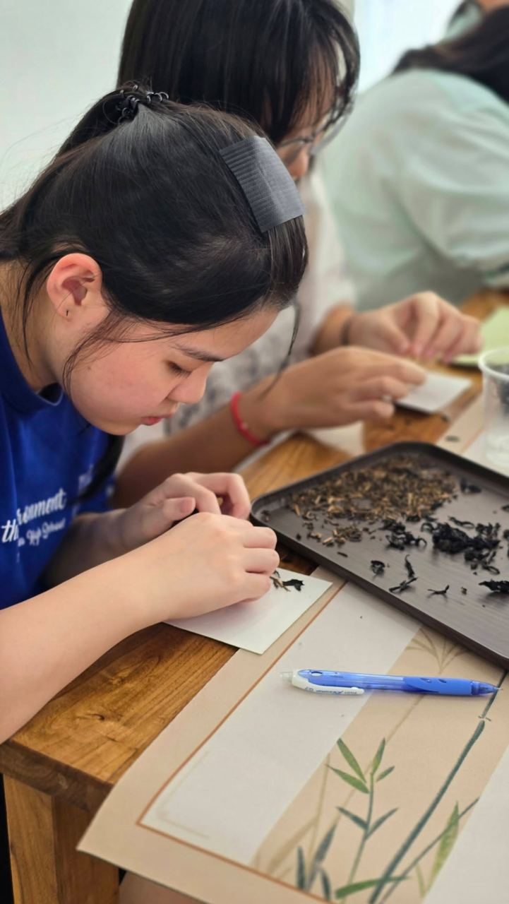
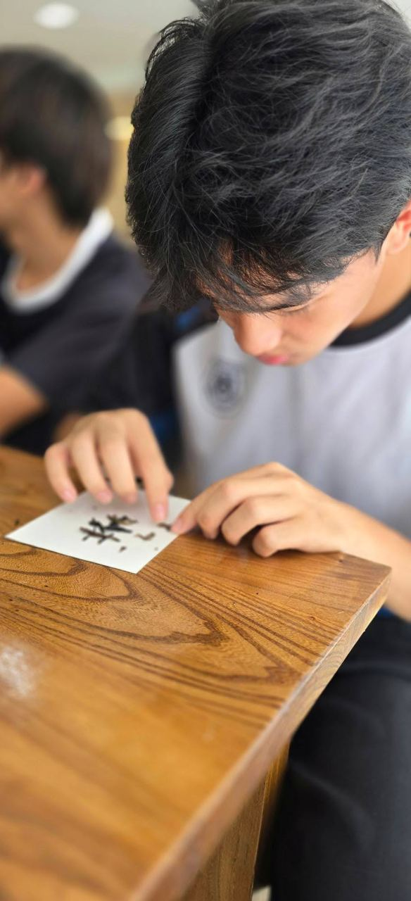
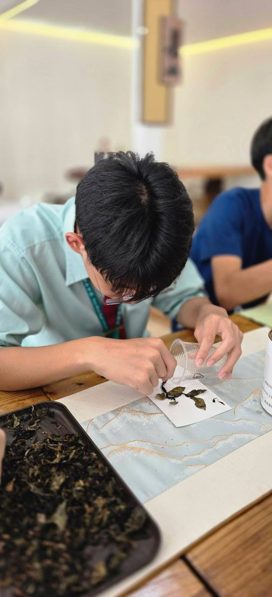
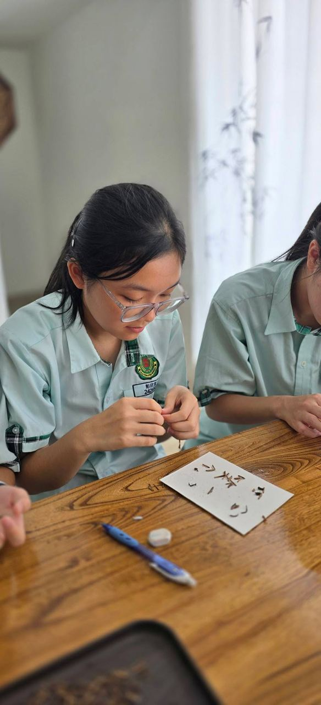
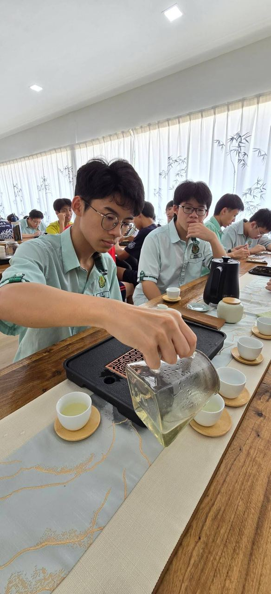
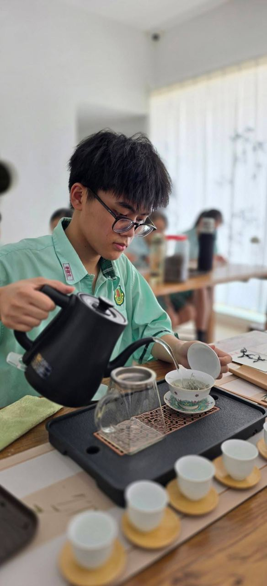

【一盏清茶，一片匠心 🍃】
【一盏清茶，一片匠心 🍃】
在今天的茶文化选修课上，南华独中的同学们不仅亲身体验了传统泡茶与品茶的宁静雅致，更发挥创意，将泡茶后的茶叶渣晒干，巧手绘制成一幅幅独特的“茶叶画”！✨
从舌尖的品味走向纸上的艺术，同学们在实践中完美融合了中华茶文化、美学教育与环保理念。为兼具才华与创意的南华学子点赞！👍
🔗 欢迎关注南华独中官方主页，获取更多精彩校园动态：
https://www.facebook.com/sekolahtingginanhwa
#南华独中 #茶文化选修课 #独中教育 #创意环保 #校园动态 #美学教育







